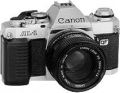

器材库 > 胶片单反相机 > AL-1

规格总览
产品类型
手动对焦胶片单反相机
发布日期
1982-03
厂家推荐价格
58,000.00 （日元）
镜头卡口
Canon FD/FL/NEW FD
停产
是
取景规格
取景器
眼平五棱取景器, 固定
取景器信息
指针显示速度，LED电子测焦/对焦显示
曝光控制
测光模式
中央重点测光
测光范围
1EV~18EV
曝光模式
A（光圈优先自动曝光）
ISO感光度
25-3200
曝光补偿
±1.5EV
快门
快门类型
电子控制，横走式，焦平面快门
快门速度
光圈优先AE：1/1000 - 2秒；B.X：1/1000 - 1/15秒
外接闪光灯
外接闪光灯
佳能“A”系列闪光灯
PC插孔
有
过片系统
卷片器
A2卷片器，每秒2幅
电源
电池
单4型碱性电池二枚
外观
颜色
银色
尺寸
142.1 × 86.5 × 47.6mm
重量
490g
其它规格
备注
TTL电子测焦系统；加装50/1.4镜头90,000日元
Laforet2006-02-02 15:433.92 分
操作性 4.00功能性 4.00美观性 3.50趣味性 4.00耐用性 3.50性价比 4.50
产品图 / 样片
佳能 AL-1
评测 / 相关文章
该产品暂无存档的评测文章